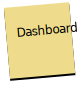
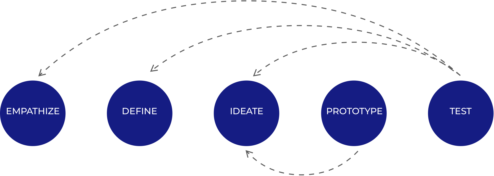

ABOUT THE PROJECT
PATI is a web app that enables pet parents to get online consultation from a verified pet expert and schedule an appointment to a vet clinic.
Client
PATI is a student project designed for Career Foundry UX Design Certified Course.
Scope
The project scope was to design 3 main features of a web app with a mobile-first approach by experiencing every stage of User-Centered Design process.
My responsibility
I was solely responsible for every phase of the process. I also refined and iterated my design based on the feedback of my tutor, mentor and peers.
Tasks
- Competitive analysis and market research
- User research
- Information architecture
- Wireframing & Prototyping
- Usability testing
- Organizing deliverables
Timeline
Nov 2019-May 2020 (Part time)
Tools
- Sketch
- Invision
-  Card Sorting
- User Survey
- User Interview
- Preference Test
Project Inspiration
The idea of designing PATI emerged from my personal experience as an expat with an unwell cat on the first day in a new country.
Challenge
Pet parents consider their pets as their children and want what is best for them.
They tend not to take their pets to a clinic for every health issue because being in a clinic is stressful for pets and it might cause more health problems. Pet parents also want to avoid the long waiting and examination period in a clinic.
They are willing to get remote help but they are not sure if they will get reliable help from a capable expert and it makes them less willing to pay for a service.
Challenge is to create an app that assures pet parents about the capability and the reliability of an expert and that they will get a caring, satisfying, and warm experience.
DESIGN PROCESS
COMPETITIVE ANALYSIS
I analyzed six products to see how they solve the pet parents’ concerns regarding their pets and performed UX focused competitive analysis for one direct competitor, PetCoach.
Key Takeaways
- There is an opportunity to stand out among the products because existing products don’t offer many options, a way to list experts and decide which one is the best for their problem.
- My app could stand out with a well-organized architecture, straightforward flow, and by being easy to learn, desirable and memorable.
USER RESEARCH
To better understand the pet parents’ needs, goals and pain points
-first I conducted a user survey filled by 21 participants.
-then I interviewed 5 pet parents to gain more insight about their feelings and experiences.
Key Insights
None of participants have used a similar product before.
Didn’t know such a service exists.
Don’t believe these services provide valuable information.
Wouldn’t trust the experts they don’t know
When they’re not able
to go to the vet clinic,
Call their vet and get help on the phone
Do a web search about the symptoms their pet has
Ask their friends with a pet experience.
Reliability
Recommendations
Most important criterias when choosing a vet.
Prefer eliminating their concerns without going to a vet.
Based on the user feedback, I identified the main goals of pet parents and key features to solve their problems.
THE PROBLEM
1)Pet parents want to find the best expert for their concerns and get reliable consultation.
2)Pet parents want to shorten the waiting and examination period in a clinic.
THE SOLUTION
1) Ask a pet expert
To enable users to decide capability and reliability, they had to be offered an expert list with filtering and sorting options.
2) Book an appointment to a clinic
To shorten the waiting and examination period in a clinic, users had to have a way to add a profile of their pet and a description of their concern while booking an appointment.
USER FLOWS
After noting key screens and features and I started sketching solutions and creating flows for two main tasks, ask an expert via message and schedule an appointment.
This user flow had to offer an expert list to find the best expert and fill a detailed form by adding pet profile, photos and description of their concern.
This user flow also offers a clinic list so they can decide on a clinic according to proximity, rating and reviews.
WIREFRAMES
To test my key features and get user feedback, I started turning my sketches into low fidelity wireframes and then high fidelity prototypes.
USABILITY TEST
I conducted 6 in-person usability tests with pet parents to observe how they interact with the app.
I identified 4 issues to be improved in the next iteration by using Jakob Nielsen's severity ratings for usability problems.
Issue #1
Subscription and pay per service pricing options were not clear and comparable due to access via different tabs.
I benefited from the contrast to make it readable.
To eliminate frustration, pay as you go option is selected as default, so users don’t have to take any action in this step if they don’t choose to subscribe.
Issue #2
Deciding which connection option to choose was challenging because they didn’t know what to expect from each option.
Problem was that users were not able to decide which option to choose because they need more information than price and this section was not as clear as a CTA button.
1) I replaced the ask a question options box with a clear CTA button to maintain consistency with the expert list design where has the same CTA button to enable users to directly ask a question without viewing the expert profile.
2) Then users will be able to view options in a modal screen where they can see what to expect from each option which will also result in a better sense of price differences.
This change added another step to the flow but as long as it’s clearer and more intuitive adding one more click wouldn’t cause frustration.
Issue #3
It was not clear to the users why their payment information is needed at onboarding and when it will be charged
1)Replaced step 3 and 4 to eliminate frustration caused by being asked for payment information before being able to see pricing.
2) Included a text to inform the user when their card will be charged.
1) None of the test participants noticed the text because CTA button was attracting more attention.
2) To make the information text more visible I replaced text and added borders to attract attention.
Issue #4
On the dashboard, users wanted to be able to access two main features without scrolling.
Main features are moved on top so now they are the first things user will see.
FURTHER DESIGN DECISIONS
In addition to offering well structured, effective, straightforward and intuitive experience, PATI also had to be desirable, amusing and friendly just as all pet parents feel about their pets.
In order to bring personality to PATI, loading screens are designed to amuse people with fun facts about pets while informing them about the progress and easing the waiting period.
* I used Freepik illustrations throughout the project and applied brand colors.
CONCLUSION
This project was an incredible experience as I had the chance to learn UX and UI by applying every stage of the Design Thinking Process. Working on the project alone and learning every aspect of UX was challenging but it came with learnings too.
Challenges
- The main challenge was to be responsible for every aspect of a product design, from UX to content, visual design, and branding while learning to use tools and improve skills.
- UX requires deep understanding of different disciplines. To have an understanding about every aspect of UX, reading, researching, asking and practicing is crucial and requires time.
Lessons
- Turning into student and junior again improved my learning and googling skills.
- When I’m stuck in the process and can’t come up with solutions, it’s important to go back to the problem that I try to solve and test or interview people to move on.